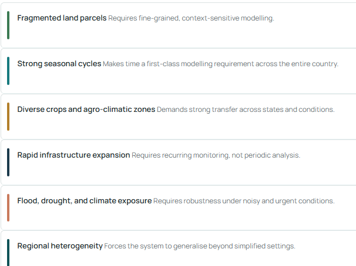
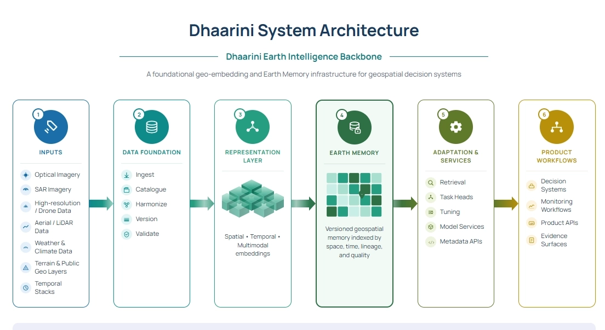
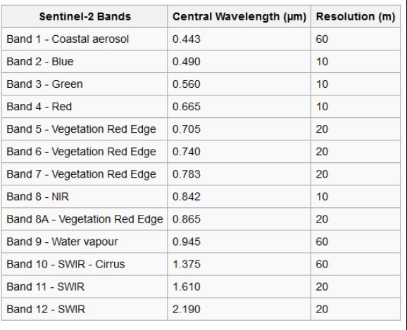

Introduction (The informal pure thoughts blog where its just me reading the white paper thinking is below)
This is an independent write-up documenting my process of engaging with SatSure's Dhaarini white paper: reading it, picking up the geospatial data science fundamentals needed to actually reason about it, and then running a small, self-contained experiment to stress-test its central architectural bets on real data.
This wasn't commissioned. I read the white paper, found the core thesis (that a label-free representation of Earth, learned once, can be reused cheaply across tasks and geographies) interesting and testable, and wanted to see how much of it would actually hold up on real Indian agricultural imagery at a scale I could run on my own.
The blog is in three parts: first, my reading of what Dhaarini is trying to solve and why; second, the geospatial data science fundamentals I had to learn to make sense of any of this (satellite bands, reflectance, spectral indices, CRS, optical vs SAR); and third, the actual experiment, building a data pipeline from the AgriFieldNet India dataset, training supervised baselines, training a label-free encoder (MAE, then JEPA), and testing whether the resulting representation actually transfers across geography, the way the white paper's core bet requires it to.
Worth being upfront about scope. This isn't a build of Dhaarini, and it doesn't touch every layer in the white paper. I tested what I could run solo, on a public dataset, with CPU-scale compute, on the layers I found most interesting and most testable.So this is a stress test of two specific bets (reuse and transfer) on one layer of a much bigger architecture, not a report card on Dhaarini as a whole. I'd rather say that plainly than let the results imply more coverage than they have.
Informal notes
Me→ Dhruva Myakeri, looking into Dhaarini docs and documenting my thoughts here
So dhaarini is an earth intelligence backbone , so basically its not a single foundation model. It is something that wants to prevent the “re-learning” of earth from scratch for every new task, sector and geo.
A “earth model” as it is referred to as in the docs. hmm so a searchable memory of the “EARTH” , and one of the core bets is to adapt it cheaply for downstream products.
the layers
hmm, the earth memory is pretty , so basically theres no discarding of embeddings after use, preserve them. (SPOILER ALERT, I HAVE REDACTED THE next analogy) , (would it be fine if for now i picture it as how google maps street view functions), but this is from the satellite, which captures even more coarse, and fine details (spans to multiple sensors and resolutions, optical, Sar, weather, terrain etc) and from my conversation with Satish J i remember him mention about multiple sorts of sensors and types of data, so yea hmm, (actually i have a tick in my brain for this technical part ill address after my next point) the docs also mention on why designing this as an india first is advantageous, since it has the hardest geospatial environments , and love the reasoning .

so with this and coming to address my tick in the brain, but unlike a street view, sorry for assuming that as a subject if its wrong but i feel when it comes to modelling the earth, thats what comes to my mind, so the thesis rests on the assumption that intelligence learned once transfers across geographies and tasks. but geospatial data is non-stationary. umm so yea thats what ticked my brain for a bit,
this is where i realise my analogy is wrong btw
actually uk what i would like to redact my analogy to the street view, thats a photo archive indexed by location, earth memory is an embedding space “similarity” , like how face rec embeddings let you search by resemblance .
if u train one region and test on another, the accuracy drop is visible prolly, and that can be used as a sort of a metric
I myself have built self supervised representation models and fought the embedding collapse, the failure mode id watch is that a shared embedding space either collapses or overfits, to the dominant regions’,
So rn i havent understood everything correctly since i havnt gone deep into understanding and working on this space, and to broaden my understanding i am building a smol version of this , kinda, a self supervised embedding on indian sentinel 2 crop data, probed cheaply to test the reuse bet, and tested across regions to actually see the transfer drop rather than theorize it.
New to the “geospatial” side ,so gonna get started with the basics,,,,, so anyways these are questions i’m testing , not conclusions, umm, so yea
happy to share what i learn
So I have read the dhaarini docs and have got some understanding , which was somewhat recorded in that informal blog.
This blog now also includes me learning the fundamentals on Geospatial Data Science etc
→the problem dhaarini attacks
Conventional geospatial AI is task-specific, every new problem triggers new data, labels, model , benchmark, etc(deployment …)
This produces outputs but never accumulates reusable intelligence underneath them. As a company expands across sectors, this repeated assembly becomes the bottleneck, it relearns Earth from scratch each time.
→what dhaarini is
Dhaarini isn't a single "earth model" you feed an image and get an answer back from. It's what the white paper calls an Earth Intelligence Backbone — a layered system built around one shared representation of Earth, with everything else (memory, adaptation, APIs, governance) organized around that representation.
The layers:

The two central bets (which this project tests)
- Reuse: a representation learned once (ideally without labels) can be adapted cheaply to many downstream tasks.
- Transfer: that reused representation holds across geographies and tasks, the risky assumption, because geospatial data is non-stationary (the same crop looks different across soil, climate, and season).
Part 2: Geospatial data-science basics
Everything needed to understand how satellite imagery is read and prepared. None of this is standard ML background, so it is spelled out.
A satellite image is not a photo
A normal photo is (Height, Width, 3): red, green, blue. A satellite image is a stack of spectral bands, (Bands, Height, Width): channels first. Each band measures how much light of a specific wavelength reflected off the ground. Our data has 12 bands.

Reflectance, not brightness
Pixel values are not 0–255 colours. They are reflectance, the fraction of incoming light reflected, usually stored as scaled integers. Never assume the scale; measure the actual value range of any new dataset before normalizing.
The invisible bands carry the signal
Healthy vegetation absorbs red light (for photosynthesis) and strongly reflects near-infrared (NIR). That NIR/red contrast is the most informative feature for agriculture and is completely invisible to the human eye. This is why "just use RGB" throws away most of the value.
Spectral indices
Simple ratios of bands that summarize physical properties:
- NDVI = (NIR − Red) / (NIR + Red), vegetation vigour. Range −1 to +1; bare soil/water near 0, dense healthy crops toward 0.7–0.9.
- NDWI = (Green − NIR) / (Green + NIR), water/moisture.
- NDBI = (SWIR1 − NIR) / (SWIR1 + NIR), built-up/bare ground.
A random forest on a few good indices is already a respectable classifier.
Resolution
Each pixel covers a fixed ground distance. Our bands are natively 10 m, 20 m, or 60 m per pixel, resampled to a common 10 m grid. Resolution can be derived from metadata: for a chip with bounds spanning 2560 m over 256 pixels, 2560 / 256 = 10 m/pixel.
Coordinate Reference Systems (CRS) and projections
A CRS is the mathematical definition of how pixel positions map to real locations on the curved Earth. Our chips use UTM projections. UTM coordinates are in metres, which is why resolution falls out of the bounds directly. Mismatched CRSs between two layers are the classic silent bug: layers that look aligned but are physically offset. Converting a UTM coordinate to latitude/longitude (WGS84, EPSG:4326) is a reprojection.
Optical vs SAR
- Optical (our data, Sentinel-2): a multi-spectral camera. Sees reflected sunlight. Clouds block it, hence cloud-free composites.
- SAR (radar, e.g. Sentinel-1): active radar, complex-valued, sees through clouds day or night. Fundamentally different physics (backscatter, phase, speckle). Not used here, but part of what Dhaarini fuses.
Tools used
- rasterio / GDAL: read GeoTIFF rasters, access metadata (bands, dtype, CRS, bounds).
- rasterio.warp.transform: reproject coordinates between CRSs.
- numpy: array handling; bands stacked into
(12, H, W). - boto3: pull data from an S3-compatible public bucket.
Common data-reading pitfalls (all hit in this project)
- uint16 underflow: subtracting unsigned integers wraps negatives to huge positives. Cast to float before subtracting (e.g. for NDVI).
- Band ordering:
B8Asorts afterB12alphabetically, so relying on sort/glob order silently scrambles channels. Order bands explicitly. - File-type confusion: several
.tiffiles per chip look identical; the value range identifies them (0–36 = crop labels, thousands = field IDs, reflectance = imagery), not the filename. - Per-image vs global normalization: normalize with statistics computed across the whole dataset, not per patch, or identical crops under different lighting get mapped differently.
Part 3: The dataset
AgriFieldNet India Competition Dataset (Radiant Earth, via Source Cooperative).
| Property | Value |
|---|---|
| Imagery | Sentinel-2, optical, single-date |
| States | Uttar Pradesh, Rajasthan, Odisha, Bihar |
| Usable chips | ~1,165 (image + train label) |
| Chip size | 256 x 256 px @ 10 m = 2.56 km x 2.56 km |
| Bands | 12 (B01–B12 incl. B8A), uint16, separate single-band tifs |
| Longitude range | 76.26°E (west) to 88.03°E (east) |
| Labels | Per-pixel crop type (segmentation), 13 classes |
| Label density | 0.256% of pixels labelled crop; 99.74% background |
Classes
0 Background, 1 Wheat, 2 Mustard, 3 Lentil, 4 Green pea, 5 Sugarcane, 6 Garlic, 8 Maize, 9 Gram, 13 Coriander, 14 Potato, 15 Berseem, 16 Rice, 36 Fallow.
Key data properties (measured)
Total pixels : 3,735,552 (over 57 chips)
Non-zero (crop) : 9,575 (0.256% of all pixels)
Per class: class 1: 3,087 | class 2: 3,264 | class 16: only 14 pixels | ...
Two facts dominate everything downstream: extreme label sparsity (0.256%) and severe class imbalance (some crops have thousands of pixels, others 14).
→Building the data foundation
Goal: turn raw .tif files into verified (image, label) pairs.
Reading a chip
rasterio.open() gives metadata and pixels. First read confirmed the format:
Band count : 1
Size (H,W) : 256 256
Dtype : uint16
CRS : EPSG:32645
Bounds : BoundingBox(left=589600.0, bottom=2833920.0, right=592160.0, top=2836480.0)
Value range: 0 to 6642
(This was a field_ids file: the 0–6642 range gives it away, not the filename.)
Assembling 12 bands
Each chip stores 12 single-band files (..._B01_10m.tif … ..._B12_10m.tif). load_chip opens them in explicit physical order and stacks to (12, 256, 256). Per-band ranges on one chip:
Chip shape: (12, 256, 256)
B01: 44-48 B02: 35-47 B03: 29-45 B04: 22-48
B05: 24-51 B06: 28-67 B07: 31-90 B08: 26-86
B8A: 29-97 B09: 7-17 B11: 11-96 B12: 7-89
The rising staircase from visible (B02–B04) to NIR (B07–B8A) is the vegetation signature. B09 (water vapour) is flattest: low information.
Global normalization
Streamed over all chips to compute per-band mean/std (using running sums of x and x²; variance = E[x²] − E[x]²), saved to band_stats.npz. Full-dataset result:
Per-band mean: [43.33 38.76 37.69 39.6 42.69 55.08 63.77 60.4 70.24 13.2 69.52 48.5]
Per-band std : [3.38 4.22 5.66 9.81 8.51 6.8 8.13 7.79 9.15 2.37 17.75 16.45]
Pairing images with labels
Chips matched by ID; only chips with both an image and a label kept:
Image chips: 59 | Crop labels: 1165 | Usable pairs: 57
Two orphan chips (image but no label) were legitimate test-split chips and dropped.
Patch labelling: the sparsity problem
Naive approach: cut 16x16 patches, label by the majority pixel. Result:
8 patches | 2 classes: [1, 2]
Only 8 usable patches, because a 16x16 patch is "majority crop" only if it lands almost entirely inside a labelled field, nearly impossible at 0.256% density.
Fix: center-pixel labelling: slide a 16x16 window with stride 4; keep a patch only if its center pixel is a labelled crop; label it by that pixel. Result:
540 patches | 12 classes (on 57 chips)
10694 patches | 13 classes (on full ~1165 chips)
Splits
- In-distribution: chip-level random split, 20% test, seed 42. Splitting by chip not patch prevents spatial leakage (overlapping patches from one field landing in both train and test).
Chips -> train 837, test 209
Patches-> train 8530, test 2164 - Rare-class filter: drop classes with < 40 train patches:
Sugarcane (20) drop, Rice (12) drop -> 11 classes kept
Train: 8498 patches | Test: 2155 patches
MODELLING:
Baselines (why?)
A baseline is a deliberately simple model built first so later, sophisticated models can be judged against it. Here they also serve the thesis directly: the supervised baseline is the "trained the expensive way" reference that the self-supervised embedding must match to prove the reuse bet.
Self-supervised learning: why
Labels are the scarce resource (0.256% of pixels). Self-supervised learning trains a model on the imagery without labels, by hiding part of the input and having the model predict the missing part. To do this it must learn the structure of farmland. The learned encoder is then a reusable representation.
Masked Autoencoder (MAE)
Mask a fraction of the patch, encode the visible part to an embedding, decode back to reconstruct the full patch, and compute loss (MSE) on the masked pixels only, so the model cannot cheat by copying visible input. After training, keep the encoder, discard the decoder. Lineage: He et al. 2021 (MAE), Cong et al. 2022 (SatMAE, the multi-spectral satellite adaptation).
JEPA (Joint-Embedding Predictive Architecture)
Instead of reconstructing pixels, predict the embedding of the masked content in latent space. A target encoder (an EMA, exponential moving average, copy of the main encoder, updated without gradients) produces the target; a predictor maps the context embedding to it. Because it predicts representations, not pixels, it is pressured toward semantic structure and away from surface noise. Lineage: I-JEPA (Assran et al. 2023); the text version is the author's prior work. The version here is simplified: it predicts the global patch representation rather than spatially-located target blocks, adapted to the 16x16 scale.
Dimensional collapse and VICReg
Self-supervised embeddings can collapse: the model routes information through very few dimensions, wasting the space. Measured by effective rank (from the eigenvalue spectrum of the embedding covariance; low = collapsed, near full = healthy). VICReg regularizes against this with two terms:
- Variance: push each dimension to have spread ≥ a target (keeps dims alive).
- Covariance: push off-diagonal covariances toward zero (keeps dims distinct / decorrelated). Variance alone controls per-dimension spread but not redundancy; covariance is what prevents rank collapse.
Linear probing: the reuse test
Freeze the self-supervised encoder (weights locked, no gradients). Embed each labelled patch. Train only a single linear layer (128 → 11) on the labels. Because the probe has almost no capacity, any classification skill must come from the embedding already organizing the classes. If it works, the label-free representation is genuinely reusable.
Transfer test
Train the probe on one geographic region and evaluate on a held-out region. The drop versus in-distribution performance is the non-stationarity / transfer cost: the risky part of Dhaarini's thesis, quantified.
Earth Memory
Store every patch's embedding + metadata, and search by cosine similarity ("find farmland like this"). Retrieval quality is measured by the nearest-neighbour same-crop rate vs a random baseline.
Stage 2: Baselines (done)
Baselines (trained with labels)
The "expensive way, with labels" reference the reuse bet has to match.
- Random forest on spectral features: macro-F1 0.232
- Small CNN, end to end: macro-F1 0.240
Side finding: wheat and mustard get confused in both models. They're both winter rabi crops with overlapping timing, so on single-date optical they look almost identical. Two different methods making the same mistake means it's the data, not the model.
Deliberately simple models to set the bar the embedding must beat. Split is by chip, not by patch, to prevent spatial leakage (seed=42, 20% test).
Full-data split: 837 train / 209 test chips → 8,530 / 2,164 patches, 13 classes.
Baseline A: Random Forest on spectral features
Per-patch: 12 band means + NDVI/NDWI/NDBI (15 features). Discards all spatial layout on purpose: tests how far pure spectral average gets you.
- Macro-F1 0.197, accuracy 0.55.
Baseline B: Small CNN (12→32→64 conv, global pool, linear)
Uses spatial texture the RF throws away. On CPU, 30 epochs.
- Macro-F1 0.186, accuracy 0.32. Train loss barely moved → underfitting, has headroom.
Findings (the reportable part)
- Quality tracks sample count. Only the 3–4 populous classes (Fallow, Wheat, Lentil, and one distinctive crop) are learnable; the ~10 rare classes score ~0.
- Macro-F1 fell vs the 57-chip run (0.35→0.20) even though accuracy rose, because the full test set now includes rare classes scoring 0. The honest, complete problem is harder than the flattering subset. Imbalance dominates.
- RF vs CNN = different failure modes, not a clean winner. RF is a conservative majority-guesser (dumps into big classes, safe precision); the CNN takes risks and actually engages rare classes (higher recall, lower precision).
- Single-date limitation is visible: two crops are heavily confused in both models: evidence that same-date spectra can't separate similarly-timed crops. Motivates Dhaarini's "time is a first-class dimension" claim.
Next housekeeping
- Filter ultra-rare classes (
MIN_TRAIN_PATCHES = 40) for a fair comparison; report the dropped ones as "insufficient data". (filter_split.py) - Attach crop names to all outputs (
CLASS_NAMES) so confusion matrices read in real crops.
Stage 3: Self-supervised geo-embedding (done)
A masked autoencoder (SatMAE / He-et-al. lineage), trained with no labels to reconstruct hidden pixels from visible ones, forcing it to learn farmland structure. Encoder → 128-dim embedding; decoder reconstructs the patch.
extract_patches.py: pulls 60,000 patches from the 837 train chips (no label needed, so ~7× more data than the 8.5k labelled baseline patches). Saved topretrain_patches.npy. This is the concrete payoff of self-supervision on a sparse-label dataset.mae.py: trains the MAE, saves the frozen encoder tomae_encoder.pt, reports embedding effective rank as a collapse check.
The dimensional-collapse episode (the key finding)
- Plain MAE → effective rank 21/128 (thin: reconstruction needs few factors, so the embedding under-used its space).
- First fix attempt (variance term only) → collapsed to rank 1.2/128 while the variance loss read 0.0000. Diagnosis: this was a covariance/redundancy failure, not a variance one; all dims were correlated (individually spread, collectively rank-1). Variance regularization alone can't see this.
- Correct fix: full VICReg (variance + covariance terms). Covariance decorrelates dimensions → effective rank 62/128 (healthy).
covloss fell 3.6 → 1.6 across training, confirming the mechanism. - Cost: recon loss rose 0.059 → 0.14: capacity traded from reconstruction to a distributed embedding. Correct trade: a rich embedding that reconstructs a bit worse transfers better than a thin one that reconstructs well.
- Tuning note: with covariance active, VAR_WEIGHT 25 vs 30 gave rank 62 vs 63: variance was no longer the binding constraint.
This is a real instance of the "shared embedding collapses" failure mode: hit it, diagnosed the specific cause (redundancy, not low variance), fixed it with the right regularizer. Directly on-thesis for the transfer critique.
Stage 4: Reuse test (done)
Freeze the label-free encoder, embed every labelled patch, train only a single linear layer on top, evaluate on the same filtered 11-class test split.
probe.py: loads frozenmae_encoder.pt, precomputes embeddings, trains annn.Linear(128 → 11), reports macro-F1 vs baselines.
Result
| Model | Labels used for representation | Adapter | Macro-F1 |
|---|---|---|---|
| Random Forest | full | RF on features | 0.232 |
| Small CNN | full | end-to-end | 0.240 |
| MAE + linear probe | none | 1 linear layer | 0.224 |
The reuse thesis essentially holds. A linear probe on a representation learned with zero labels landed within ~0.02 of models trained end-to-end with labels, i.e. "learn Earth once (no labels), adapt cheaply (linear head)" works on Indian farmland. Notes:
- The probe engages hard classes (Garlic 0.61 F1, Green pea 0.52) like the CNN, not just the majority classes.
- Wheat↔Mustard confusion persists in all three models → the ceiling is the single-date data, not the method (two rabi crops, overlapping phenology).
- The MAE is undertrained (40 epochs, recon still falling) → clear headroom to beat the baselines by training longer/bigger, or via a JEPA variant.
Stage 6: Transfer stress test (done, THE HEADLINE RESULT)
Split chips geographically by longitude (west < 82.2°E = train, east ≥ = test) instead of randomly, using each chip's CRS reprojected to lat/lon. West ≈ Rajasthan/western UP (drier); east ≈ Bihar/Odisha. Same frozen MAE encoder, same linear probe.
region_split.py (per-chip longitude) → probe_transfer.py (geographic probe).
Result
| Split | Macro-F1 |
|---|---|
| In-distribution (random, regions mixed) | 0.224 |
| Cross-region (train West → test East), all classes | 0.048 |
| Cross-region, shared classes only (removes distribution-shift artifact) | 0.054 |
~76% of performance lost when crossing regions, and it persists after restricting to crops present in BOTH regions. So the collapse is genuine representation-transfer failure, not just a missing-class artifact. This is non-stationarity quantified: the exact risk raised in the Dhaarini write-up, measured on real Indian data. The reuse bet that held in-distribution breaks across geography.
Why it collapsed (two mechanisms, both real)
- Class distribution shifts: Fallow (class 10) is essentially test-only (common in the east, near-absent in the west), so the probe never learned it (0.00 F1). The label distribution itself is non-stationary across regions.
- Representation doesn't transfer even for shared crops: Green pea 0.52→0.14, Garlic 0.61→0.10. These grow in both regions, yet still failed in the east: the same crop looks different in eastern soil/climate/season than the embedding learned in the west. This is the "overfits to the dominant region" failure predicted in the write-up.
Caveat (for rigour)
Part of the drop is the class-shift artifact (test-only + tiny-support classes). A cleaner number restricts to classes present in both regions to isolate pure representation-transfer from distribution-shift. TODO before quoting formally.
Stage 3b: JEPA variant (done)
Why JEPA (my approach)
so an MAE is scored on reconstructing pixels, so to get the MSE low it has to model everything in the patch, even the region specific surface details, which doesnt transfer.
hence having knowledge on JEPA, i knew it would remove this pressure. it predicts the embedding of the masked content, not the pixels.
it only needs to get the representation right, hence it is pushed towards the important structure and away from the surface noise. henceee, if this theory would hold that would mean, this would become a transferrable representation.
so i ran both, same backbone, only the objective changed:
| In-distribution | Transfer (W to E) | |
|---|---|---|
| MAE (pixel) | 0.224 | 0.054 |
| JEPA (latent) | 0.217 | 0.079 |
so thats what kinda did happen, the in distribution was almost a tie, JEPA gave 0.217 and mae had given 0.224, but the transfer, JEPA gave 0.079 and MAE gave 0.054, so the advantage appeared precisely where i assumed it would. in distribution there is no penalty for encoding region specific stuff since train and test share regions, so both should tie, and they did. a random improvement would have moved both numbers.
the encoder did pretrain on all regions though, only the probe was west only, so its not really a data coverage thing, there are some probable reasons, but for now i had to test out if my assumptions and approaches would do something, and i believe JEPA would be an approach dhaarini could adopt, though i couldnt demonstrate it completely, the theory around JEPA is what makes me say that.
Stage 5: Earth Memory (done)
Index every patch as a stored embedding (JEPA) + metadata (crop, chip, longitude); search by cosine similarity: "find farmland like this." earth_memory.py.
Retrieval works
- Nearest-neighbour same-crop rate: 82.4% (random baseline ~9%). The space is organized by agricultural meaning without ever being told about crops: the Earth Memory thesis, validated. Analog discovery works.
- Retrieval "errors" are the same Wheat↔Mustard confusion seen in every other stage: a completely different method (retrieval, not classification) independently confirms these crops are entangled on single-date optical.
A subtle, important observation
Some queries return neighbours at the identical longitude with sim ~0.998: the embedding partly encodes scene/location, not purely crop. This is the same fact as the transfer collapse, seen from another angle: a location-entangled embedding is exactly one that fails to generalize across regions. Retrieval success and transfer failure are two views of one underlying property.
The versioning problem: demonstrated
- Same-encoder best match (JEPA→JEPA): sim 0.982.
- Cross-encoder (JEPA query → MAE memory): sim 0.523 (near-garbage).
- Different encoders learn different coordinate systems → **memory built with one encoder is meaningless to another.** Improve the encoder and the whole stored archive must be re-embedded. This is the Earth Memory lifecycle risk from the white paper, made concrete on real data.
- Reuse works in-distribution: self-supervised embedding + linear probe (0.224) matches supervised baselines (RF 0.232, CNN 0.240) using no labels.
- Reuse breaks across regions: same embedding collapses to 0.054 W→E (~76% loss), persisting after removing class-distribution artifacts: non-stationarity, quantified.
- A better objective helps transfer: JEPA (latent) beats MAE (pixel) by +46% on transfer while tying in-distribution: a specific, theory-driven result.
- Earth Memory works and has a lifecycle cost: embedding retrieval hits 82% same-crop (vs 9% random); swapping encoders strands the stored memory (0.98→0.52 similarity): the versioning problem, demonstrated.
This is the empirical version of the argument made to SatSure: the reuse bet is real, the transfer risk is real and severe, and the pretraining objective is one lever that measurably reduces it.
All of this ran on 57–1,165 chips and CPU-scale compute over a few days of solo iteration: with real data budgets and real compute, I'd expect every number here (reuse, transfer, JEPA's edge, retrieval quality) to move further in the direction the thesis predicts, not away from it.